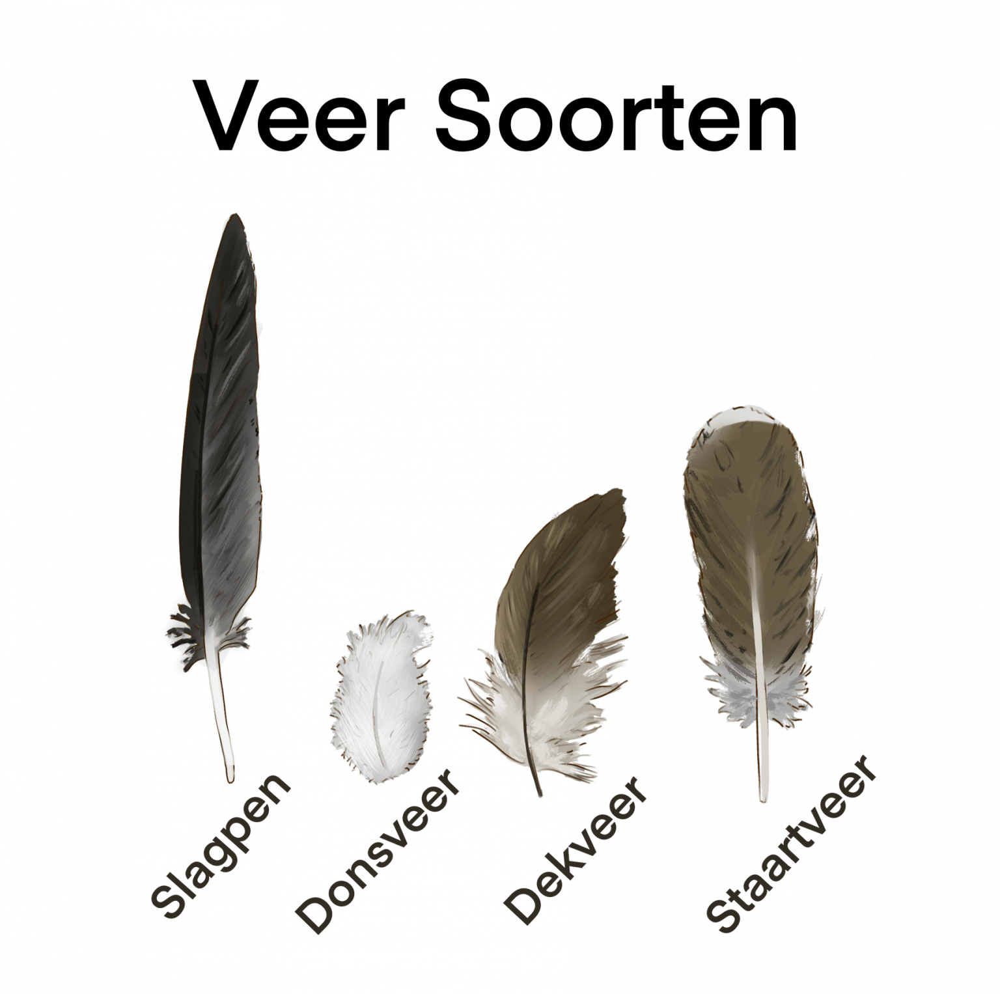

-
Slagpen: Deze zitten vast in de vleugel, tegen het bot aan. Deze zorgen voor het vleugeloppervlak welke benodigd is om te vliegen. Ze geven stabiliteit en zijn onmisbaar voor de vogel. Grootte varieert per locatie op de vleugel (scroll naar beneden voor schematisch weergave van een vleugel met de soorten veren erop).
-
Donsveer: Over het algemeen een klein pluizig veertje met relatief veel oppervlak. Doordat het veertje pluizig is, zit er veel lucht in waardoor het goed warmte vast kan houden. Wanneer het koud is kunnen vogels hun veren uit zetten waardoor ze meer warmte vast kunnen houden.
-
Dekveer: zoals de naam al zegt dekt deze veer de vogel af, vaak onder de dekveren zitten ook donsveren.
-
Staartveer: is vergelijkbaar met de slagpen het zorgt voor stabiliteit bij het vliegen. De staart is zeer belangrijk omdat de vogel hierbij zijn baan kan corrigeren in de lucht.